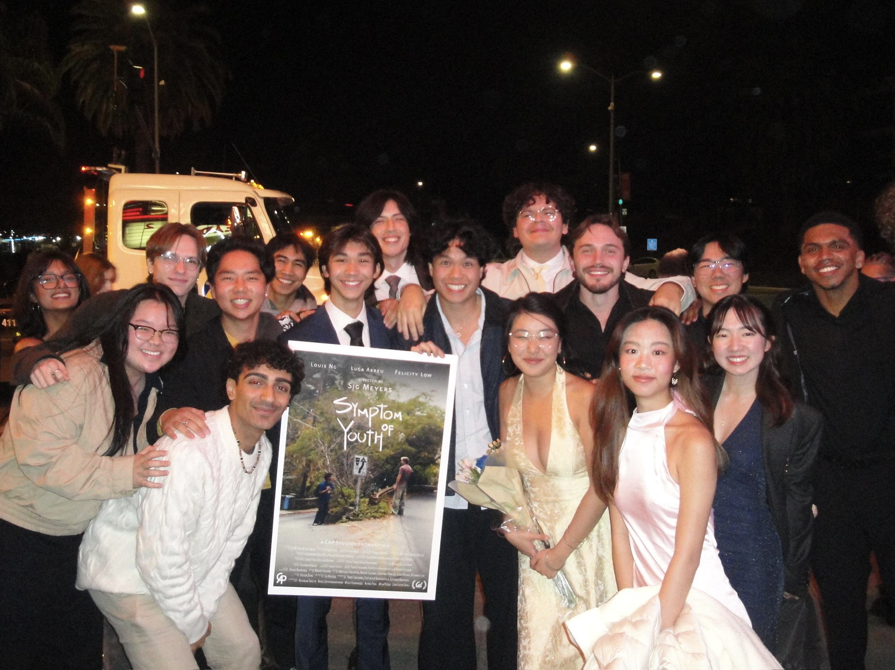
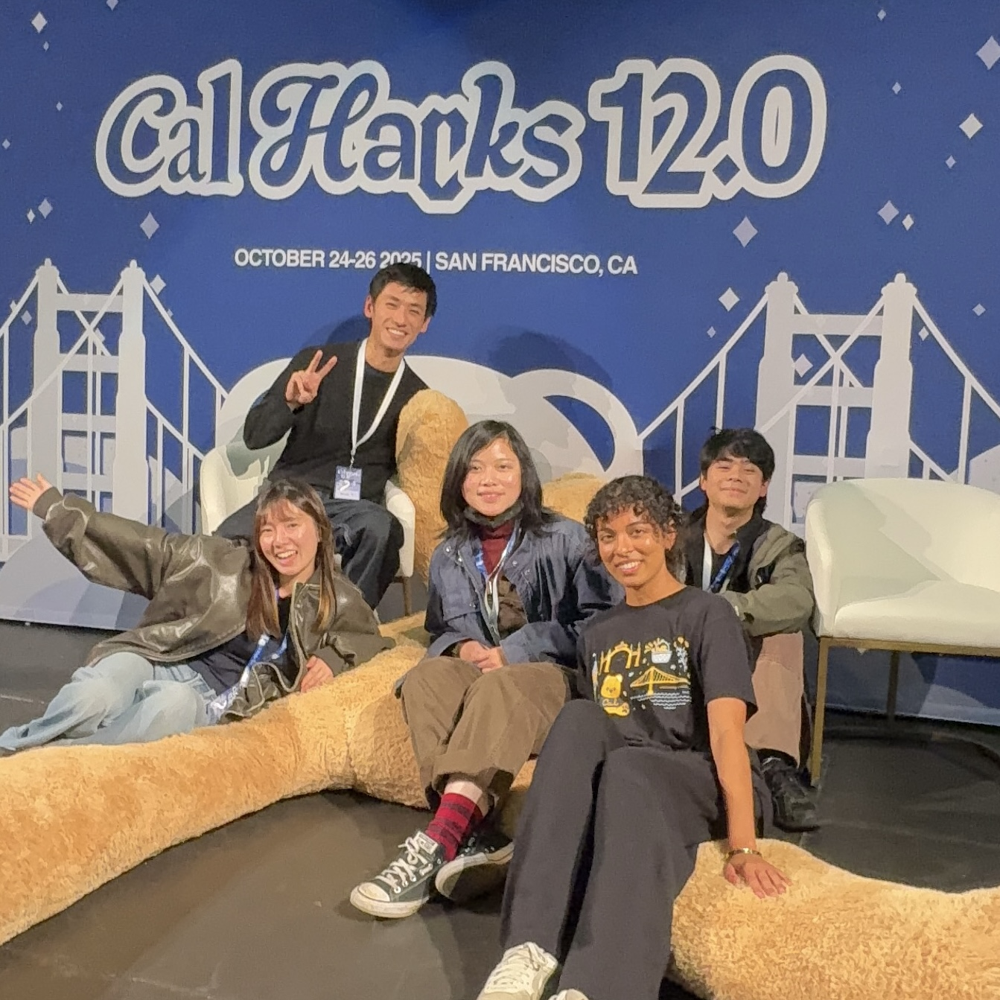
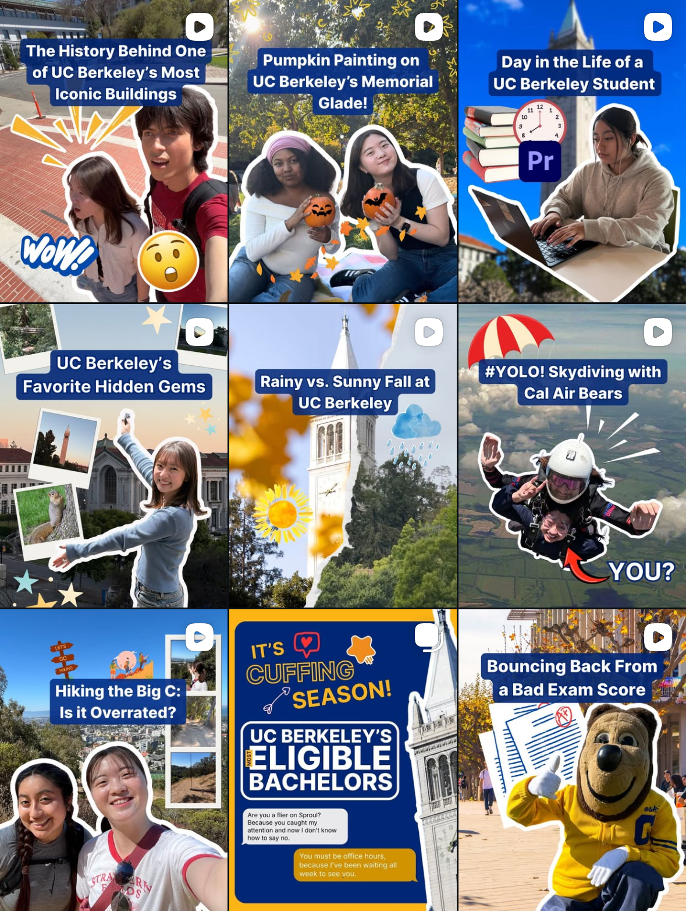

I'm Yoko!
I code, I film, and I bake!
Now that you are here,
I will take you to a little bit of my world!
Skills
About Me
Hi, I am Yoko!
I am a data science student at UC Berkeley🧸💛
I am Passionate about the intersection of technology and storytelling.
I love looking into different topics, and I am currently learning UI/UX, 3D animation, and computer vision👀🎥
Projects
Frontend/UIUX
I work as a UI/UX Engineer for ASUC Office of CTO (UC Berkeley’s student union).
There, I make websites for student organizations and student-led new platform projects!

Animation
I am currently learning 3D animation using Autodesk Maya.
Here’s my past animation short film!

Data Science
Through clubs and internships, I dedicate my data science skill for social good.
Here are few of the examples!

Film
Outside of tech, film is my life-long passion!
Through Cinematic Arts and Production Studio, I work for 2-3 productions each semester.
Here are some of my past works!

Backend
Through clubs and hackathons, I am currently working on my backend skills.
Here are few of the examples!

Marketing
I also work for school's official social media as a video production intern!
Check out @ucberkeleylife and follow our super awesome contents :)
